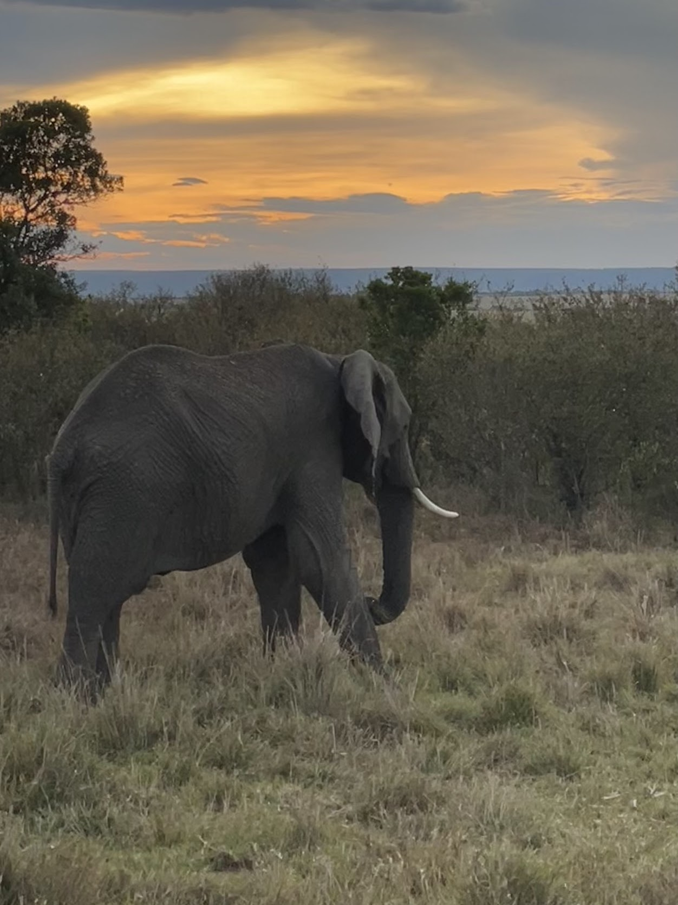

Growing up in Castle Rock, Colorado, I've always been drawn to adventure — whether hiking in
the Rockies, swimming in mountain lakes, or traveling internationally for meaningful service
and exploration. Travel has taught me more about the world, other cultures, and myself than
almost anything else.
The most defining chapter of my life was a 2-year service mission to the Marshall Islands
for The Church of Jesus Christ of Latter-day Saints, where I lived among the Marshallese people,
learned their language, and dedicated myself to sharing the gospel of Jesus Christ.
I've also traveled to Kenya to film the Equator Run and groundbreaking of Africa's
first public children's cancer hospital, sailed around the U.S. Virgin Islands,
explored the Bahamas, and relaxed on the Pacific coast of Punta Mita, Mexico.
Destinations
Places I've been and a few dream destinations still on the list:
✈ Places I've Been
Marshall Islands, Pacific Ocean
Served a 2-year mission for The Church of Jesus Christ of Latter-day Saints
Learned the Marshallese language
Shared the gospel and helped families grow closer to Jesus Christ
Snorkeled in pristine coral atolls in the Pacific
Kenya, East Africa
Filmed the Equator Run — kickoff to Africa's first public children's cancer hospital
Documented the groundbreaking ceremony and interviewed staff and families
Experienced the culture and vibrant city of Nairobi
U.S. Virgin Islands
Sailed around the islands with my brother and mom
Snorkeled coral reefs teeming with tropical fish
Visited the waterfront of Charlotte Amalie on St. Thomas
The Bahamas
Explored Nassau — colonial architecture and local markets
Relaxed on the white sand beaches of Half Moon Cay
Snorkeled in the clear shallow waters
Punta Mita, Mexico
Relaxed on the Pacific Coast beaches near Nayarit
Enjoyed authentic Mexican food and hospitality
Colorado Rockies, USA
Hiked Hanging Lake Trail in Glenwood Canyon
Camped at Rocky Mountain National Park
Skied in Breckenridge and Vail
⭐ Dream Destinations
Iceland
Chase the Northern Lights
Hike on glaciers in Vatnajokull National Park
Relax in the Blue Lagoon
Japan
Walk the Nakasendo trail between Kyoto and Tokyo
See cherry blossoms in spring
Visit the Fushimi Inari shrine
New Zealand
Bungee jump in Queenstown
Hike the Tongariro Alpine Crossing
See the fjords of Milford Sound
Marshall Islands: Two Years of Service
Of everything I've experienced in my life, nothing compares to the two years I spent living
in the Marshall Islands as a full-time missionary for The Church of Jesus Christ of Latter-day Saints.
This wasn't a vacation — it was a complete immersion in a culture, a language, and a people
that I came to deeply love.
I learned to speak Marshallese — one of the most unique languages in the Pacific — so I could
genuinely connect with the people I was there to serve. Day after day I knocked on doors,
sat with families, and shared my testimony of Jesus Christ.
The Marshall Islands are a breathtakingly beautiful chain of low-lying atolls in the central
Pacific with turquoise lagoons and white sand beaches. The experience shaped who I am and
deepened my faith, my compassion, and my understanding of what truly matters.
Kenya: A Life-Changing Trip

One of the most meaningful experiences of my life was traveling to Kenya to film and document
the groundbreaking of Africa's first public children's cancer hospital. The event was kicked
off with an Equator Run — a symbolic race across the equator that united local communities,
medical professionals, and international supporters.
I was there to capture it all on camera — the energy of the run, the emotion of the ceremony,
and the faces of families whose children would one day be treated in that hospital. Being on
the equator, in the heart of Kenya, witnessing something that would change thousands of lives
was an experience I'll never forget.
The Equator Run — Kenya Groundbreaking
Watch the Equator Run that kicked off the groundbreaking of Africa's first public children's
cancer hospital — an event I had the honor of filming firsthand.
Kenya: Population by County
This Tableau visualization shows the population distribution across every county in Kenya.
Having spent time there, it was interesting to explore how population is spread across the
country — from densely populated Nairobi to more remote counties. Hover over the map to explore.